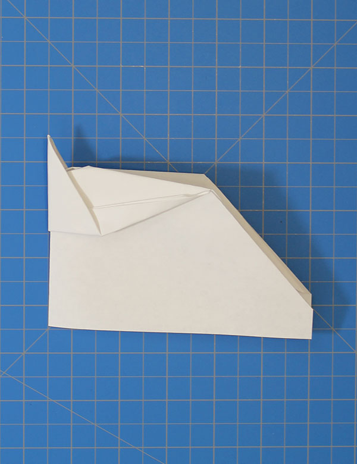

Fold the top down about two inches.
Fold the sheet in half vertically.
Fold the top right corner down to the left edge
Repeat step three with the other side folding the opposite way.
Open sheet back up as shown.
Accordion fold the top side rectangles in to get this shape.
Fold the bottom flaps up and tuck them under the triangle shape.
Fold the peak back to the bottom edge of the paper.
Flip the paper over and crease in the sides of the upside-down triangle.
Invert fold the side in to get this shape.
Now, fold the plane in half away from you.
Fold down one wing as shown and repeat with the other side.
Crease the ends of the wings up and crease the nose down to create the beak.Cut two slits at the tail of each wing.
The end product should look like this.

@2019 All Rights Reserved. paperairplanetutorial.com